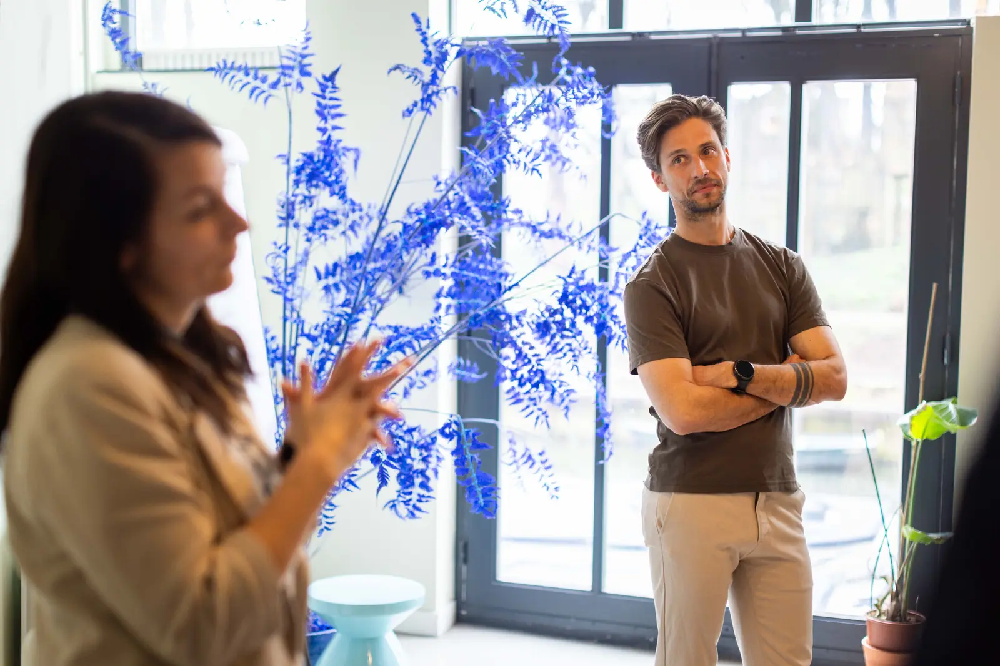

Wat doe ik dat jij zo doet?
Samenwerken gebeurt tussen mensen. Wat doe ik dat jij zo doet? Wat doe jij dat ik zo doe? Interactie is complex: de context speelt mee, de geschiedenis van mensen en wat er op dat moment bij iemand speelt. We hebben elkaar nodig om het werk gedaan te krijgen. Zolang de ontmoeting ontbreekt, blijven relaties en samenwerking aan de oppervlakte en de beperkende factoren eronder, hoe goed de afspraken ook zijn.
We beginnen met luisteren en vragen stellen
Voordat we ook maar één model inzetten, oefenen we twee vaardigheden: aandachtig luisteren en open vragen stellen. Dat doen we vanaf de eerste dag zelf voor, zodat deelnemers zien hoe je onderzoekend met elkaar in gesprek bent. Het wordt onderdeel van onze gezamenlijke afspraken, waar we het hele traject op teruggrijpen. Daar hoort bij dat je hardop toetst wat je over de ander denkt te weten.
We werken in het moment
Interactie onderzoeken we het liefst in het moment zelf. We letten op kleine signalen: toon, timing, spanning, iemand die zich terugtrekt of juist ruimte inneemt. Dan stellen we hardop de vraag: wat gebeurt hier nu? Welk handelen vraagt dit moment van je? En wat zou je een volgende keer anders willen doen?
Wanneer een opleidingsdag een thema heeft, zien we dat thema vaak terug in de groep. Op een dag over spanning in samenwerking wordt die spanning in de groep zichtbaar. Daar werken we graag mee: zo wordt het thema voelbaar en openen we het gesprek over wat er in het contact gebeurt.
Wat gebeurt hier nu?

Eenvoudige taal als gezamenlijke basis
In gesprekken gebruiken we eenvoudige modellen die direct toepasbaar zijn. De dramadriehoek bijvoorbeeld, die laat zien hoe mensen in een gesprek de rol van Redder, Aanklager of Slachtoffer innemen, en de winnaarsdriehoek als uitweg daaruit. Zo'n model geeft voldoende afstand om te onderzoeken wat jij doet, wat de ander doet en hoe dat samenkomt. Naarmate het gesprek verdiept, merken deelnemers hoe beperkt een model is vergeleken met echte interactie. Dan laten we het los en onderzoeken we de nuances van wat zich werkelijk afspeelt.
Nieuwe ervaringen brengen ontwikkeling
Uit een patroon stappen vraagt om nieuwe ervaringen in het contact. Dat begint met opmerken wat er in jezelf gebeurt, daarna ruimte voelen om dat te erkennen, en vervolgens de stap durven zetten naar het gesprek. Zo'n gesprek is spannend, omdat je er iets van je eigen patroon in onder ogen ziet. Door het vaker te voeren, neemt de angst af en ontstaat ruimte om het anders te doen.
Daarom betrekken we de omgeving van deelnemers actief bij een traject, bijvoorbeeld met driehoeksgesprekken tussen deelnemer, leidinggevende en ons. Het gesprek dat in de zaal is geoefend, wordt zo ook op het werk gevoerd.
Wat het oplevert
Leidinggevenden die het gesprek over ambities werkelijk voeren, zodat een medewerker zich gezien weet en blijft. Collega's die elkaar aanspreken en spanning uithouden. Teams waarin de afspraken op papier ook in het contact kloppen.
Bewustzijn van wat er in jou gebeurt maakt echt contact mogelijk en uit echt contact ontstaat ontwikkeling. Dat werkt door in de groep als geheel: de volgende laag.